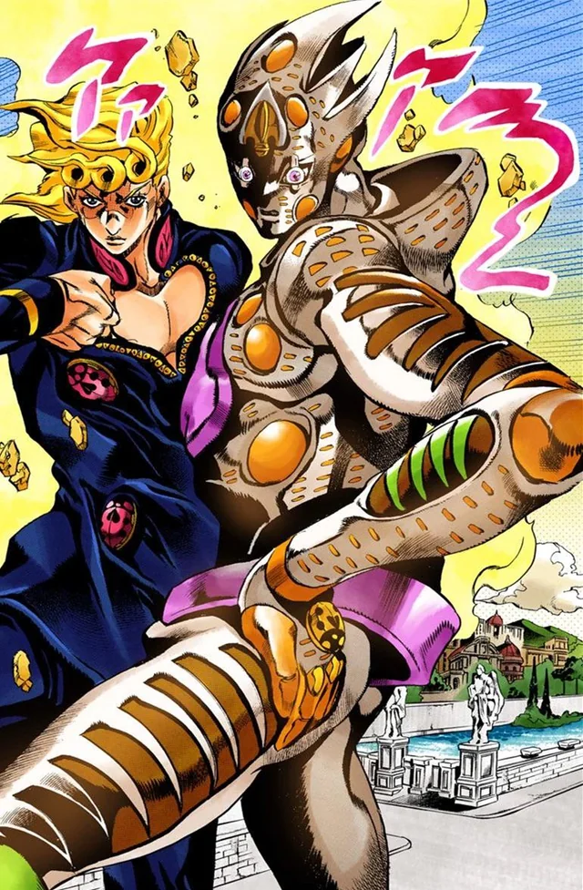

Giorno Giovanna
JoJo's Bizarre Adventure: Vento Aureo
About
Giorno Giovanna is the protagonist of Part 5 of JoJo's Bizarre Adventure, titled "Vento Aureo" (Golden Wind). He is the son of DIO Brando, born from his relationship with a Japanese woman. Giorno has a dream of becoming a "Gang-Star" to rid the streets of crime and corruption in Italy.
Personality
Giorno is calm, calculated, and strategic. Despite being DIO's son, he rejected his father's evil ways and chose a righteous path. He speaks eloquently and carries himself with maturity beyond his age. His resolve to fight evil and protect the innocent drives all his actions.
Plot
Giorno Giovanna is a teenager living in Italy who dreams of becoming a “Gang-Star” (a good gangster). Unlike typical criminals, he wants to take control of the mafia to stop the harm it causes, especially to innocent people. He joins a powerful mafia group called Passione and becomes part of a team led by Bruno Bucciarati. At first, they don’t fully trust him, but Giorno proves his loyalty and intelligence through battles and strategy. As the story continues, Giorno and his team are given a mission to protect the boss’s daughter. During this journey, they uncover the truth about the boss, who is secretly controlling the organization in a cruel and dangerous way. Giorno decides that the boss must be defeated so the mafia can be changed for the better. The team faces many powerful enemies, and several members are lost along the way. In the end, Giorno succeeds in defeating the boss and rises to the top of the mafia, achieving his goal of becoming a “Gang-Star” and gaining the power to reform the organization. In short: Giorno’s story is about ambition, justice within a corrupt system, and rising to power to change it from the inside.
Abilities
- Stand - Gold Experience: Can create life from inanimate objects
- Gold Experience Requiem: Ultimate form that nullifies all actions
- Life Creation: Turns objects into living creatures
- Requiem: A power that transcends Stand evolution
- Body Part Manipulation: Can create body parts from objects